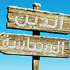
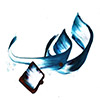

Diplomats C1/2+
Back
كتاب مستوى
C1/2+
العربــية الدبلوماسية
Arabic for Diplomats
الوحدة الأولى: العمل القنصلي والدبلوماسي والتعاملات الرسمية اليومية
الوحدة الثانية: الإعـلام
الوحدة الثالثة: الإسلام السياسي
الوحدة الرابعة: الذهب الأسود ومصادر الطاقة
الوحدة الخامسة: الهويـــة الثقافية
الوحدة السادسة: أزمات عالمية
الوحدة السابعة: حوار الحضارات
الوحدة الثامنة: الاقتصاد والتنمية والمال والأعمال
الوحدة التاسعة: الحرب على الإرهاب
الوحدة العاشرة: الصحّة والغذاء
كتاب مستوى
C1/2+
العربــية الدبلوماسية
Arabic for Diplomats
فريق التأليف
د. خالد حسين أبو عمشة
إبراهيم الخطيب
فادي علي شطناوي
د. ساجدة أبو سيف
بتول دعسان
شاهد كل المحتوى الكتاب هنا
متقَدِّم : تقدّم – يتقدم/ التقدُّم
applicant / to apply for
نفى – ينفي/ النفي
to deny/ denial
مَنْح: منحَ – يمنَح
to grant
ماضية : مضى – يمضي/ المُضِيّ
pursuing
عناصر(م) عنصر
elements
مُؤخرًا
Recently
تأمين
provide
كافة
all
فضلًا عن
In addition to
بغض النظر عن
regardless of
مكوث: مكثَ – يمكُث
to stay a while
نوَّه – ينوّه/ التنويه
to note
حرَص – يحرِص/ الحِرص (على )
to keen on
قَناعة
conviction
أكبر قدر ممكن
Highest chance possible
حال دون
Prevent
الاكتظاظ /ات
Overcrowding
استلام: استلمَ – يستلِم
receive
أعرب عن
to express
لدى
to have / to
درى – يدري/ دراية
To realize/know/
يربط(ــه) بـ
to connect with
حميم
Intimate
تمكن – يتمكن (من)
To be able
السلام العادل
just peace
انتزاع فتيل الازمة
defusing the crisis
تسيير عربة السلام
leading the peace process
مسار (ج) مسارات
Path
تشاور – يتشاور/ التشاور
to consult/consultation
تطلب – يتطلب
request
تدهور
deterioration
قصَف – يقصِف/ القَصْف
to bomb/ bombing
دمّر – يدمّر/ التدمير
to destroy/ destruction
تهدئة الاوضاع السائدة
Calming the situation
تعامل – يتعامل / التعامل
to deal/ dealing
تحد من قدرة
limited capacity
رعاية
to care/protection
التصرف
acting out/dealing
كشف حساب عن
report of performance/account statement
أولويات
priorities
استحق – يستحق/ الاستحقاق
to deserve
يبذل جهدًا : بذل – يبذل / البذل
to exert efforts
في حدود القانون
within the law
فمن غير المستطاع
it is not possible
ارتكب جرماً : ارتكب – يرتكب / ارتكاب
to commit a crime or murder
تزوير : زوّر – يزوّر
to forge/forgery
توكيل محامين : وكّل – يوكّل
Power of Attorney
خرق قانون : خرق – يخرق / الخرق
Breach of law
مَن لا مأوى له
homeless
طبّق – يطبق / التطبيق
to carry out
أكد – يؤكد / التأكيد
to confirm/ confirmation
أدرك – يدرك / الإدراك
to realize/ realization
نصح – ينصح / النصح
to advise/ advice
سوف أضرب لك مثالا
To give you an example
برهن - يبرهن / البرهنة (على)
to prove
رصد – يرصد / الرصد
to monitor/ monitoring
اعتاد – يعتاد / الاعتياد (على)
To be used to
حقق – يحقق / التحقيق = الإنجاز
achievement
حصيلة
outcome
رسوم
fees
تصديقات
authentication
نشرة /ات
bulletin
مغترب/ون
expatriate
ملامح: مَلْمَح : لمَح – يَلْمَح
Feature / Trait
الضابط(ج) الضوابط ضبط – يضبط / الضبط
Criterion
الانسجام: انسجم – ينسجم
To be in harmony with s.th.
ترسخ: رسّخ – يرسخ / ترسيخ
To implant s.th. / To consolidate
خبط عشواء
An expression used to describe an action when it is done randomly or blindly.
نمط(ج) أنماط
Style / Manner / Mode
شمولية
Inclusiveness / Comprehensiveness
يخبو: خبا
To die out / To fade away
يُحْدِق: أحدق – يحدق (بـ )
To surround or encompass s.th.
مآس مأساة
Tragedy
تسطيح: سطّح – يسطح
To over-simplify (Lit. to flatten …)
يتداعى: تداعى
To collapse
جبر: جبر- يجبر / الجبر
To set (a broken bone)
هشّ
Brittle / Delicate
خواء
Emptiness / Vacuum
اللاهي لهو
A person spends his time doing nothing useful
نكرّس: كرّس – يكرّس/ تكريس
To devote / To consolidate s.th.
موقرة: وقّر – يوقر/ توقير
To respect s.o. or s.th / To honor
مُغْفِلِين غَفِل- يغفل
To ignore s.th.
مصيرية
Decisive / Crucial
يمور
To move from side to side
أهواء هوى
Desire / Passion
دعاية/ات
Propaganda / Advertising
مواكبة: واكب – يواكب
To keep up with s.th.
تطلعات: تطلّع – يتطلّع / التطلع ( إلى
To look forward to s.th.
طموحات(م) طموح
Ambition
المساس: مسّ – يمسّ / المسّ ( بـ
To infringe s.th. (lit. to touch)
مُطلَق
Unrestricted, absolute
مقيّد: قيّد – يقيّد / تقييد
To restrict
منفلت: انفلت – ينفلت / انفلات
To break away from s.th. or s.o.
رادعة: ردع – يردع / الردع
To prevent s.o. from s.th.
الأبواق(م) بوق
Trumpet / Bugle / Horn
الشائعات(م) شائعة
Rumor
التحريض: حرّض – يحرض / تحريض
To provoke or incite s.o. to do s.th.
الفتنة(ج) الفتن
Sedition / Discord
معاول(م)مِعوَل
Pickaxe / Axe
يسب: سبّ - يسبُّ / السبّ
To insult
يشتم: شتم – يشتم / الشتم
To insult
يتهجم: تهجّم – يتهجم / التهجم
To attack s.o. or s.th
أتفه تافه تفاهة
Insignificant / Petty / Trivial
تلقين: لقّن – يلقن / تلقين
To dictate/ To instruct (To tell s.o. what to say or to do)
تحيد: حاد – يحيد / الحياد
To deviate or swerve from s.th.
قيد أنملة
A phrase used to describe very small amount of s.th. (similar to “Hair’s breadth”)
منحرف/منحرفين
Deviant
انحرف – ينحرف / انحراف
To deviate or swerve from s.th.
تتمزق: تمزّق – يتمزق / التمزّق ممزق
To be torn
نطبل: طبّل – يطبل / تطبيل طبل(ج) طبول
Lit. to beat a drum (Expression: To make propaganda for s.o.)
منبر(ج) منابر
Platform / Minbar
مسترخ: استرخى – يسترخي / استرخاء
To relax
أريكة(ج) أرائك
Couch / Sofa
ترويج: روّج – يروّج / ترويج
To promote s.th.
هزّت: هزّ – يهزّ / الهزّ
To shake s.th.
عارية(ج) عاريات عارٍ (ج) عُراة العُرْي
Naked
البديهي
Apparent / Obvious
تكرار: كرّر – يكرر
To repeat s.th.
التشبع: تشبّع – يتشبع
To be saturated or filled with s.th.
مألوف
Familiar / Accustomed
حضن: حضن- يحضن / الحضن
To embrace or hug s.o.
الزخم
Surfeit / Plenitude
مخيلة خيال
Imagination
ننسج: نسج – ينسج / النسج
To weave s.th.
المَشاهِد(م) مَشهَد
Scene
لقطة(ج) لقطات
Shot (said for film or footage)
تصرخ: صرخ – يصرخ / الصراخ
To scream
العبقرية
Ingenuity (noun)
كومة(ج) كومات
Heap / Pile
قذيفة(ج) قذائف
Projectile / Missile / Bomb
البارجة (ج) بوارج
Battleship
توثيق: وثّق – يوثق / توثيق
To document s.th.
أعجب (بـ ) / أعجب (من
To admire s.o. or s.th. (passive)
الجنازات(م) جنازة
Funeral
تعزية : عزّى – يعزّي
To console s.o. / To offer one’s condolences to s.o.
تذرع: تذرّع - يتذرع / التذرع (بـ
To use s.th. as an excuse or pretext
التصقن: التصق – يلتصق / التصاق
To get stuck to s.th.
تعتيم: عتّم – يعتّم / تعتيم
Lit. to darken / To obfuscate (media blackout)
الأشلاء(م) شلو
Severed member of a corpse
يخذل : خذل – يخذل / الخذلان
To let s.o. down / To disappoint s.o.
إرساء : أرسى – يُرسي
To make s.th. firm / To establish / To anchor
تستقي : استقى – يستقي / استقاء
To obtain s.th. from s.th. (Said for ideas and beliefs)
نزيهة
Impartial / Genuine
حيادية ←الحياد ←محايد
Neutral / Unbiased
الحداثة ←الحديث
Modernity
مستلهمَة : استلهم – يستلهم / استلهام←مُلهِم ←مُلهَم
To be inspired by s.th.
التحلّي : تحلّى – يتحلى
To have s.th. (said for morals)
قناعة (ج) قناعات / اقتنع – يقتنع / اقتناع ( بـ
Conviction / Belief
تبرهن : برهن – يبرهن / البرهنة
To prove s.th.
التمعّن : تمعن – يتمعن
To look deeply into s.th.
التسامح : تسامح – يتسامح
To be tolerant toward s.o. or s.th.
مِقياس (ج) مَقاييس / قاس – يقيس / القياس
Standard / Criterion
مصالحة : صالح – يصالح
To become reconciled with s.o.
المستدام /ـة
Sustainable
نفس طويل
Lit. long breath (A phrase used to express the meaning of endurance and persistence)
لتوّه
An expression used to express that the action has just been done.
مجاراة : جارى – يجاري
To go along with s.th.
يتوهم : توهم – يتوهم / التوهّم
To presume / To imagine
كلّف – يكلف / تكليف
To charge s.o. with s.th.
مُكلَّف - (ج) ون
The person in charge / In Islamic law the person who is sane in mind or compos mentis
إجماع : أجمع – يجمع
To decide unanimously / To have consensus
معصوم
Impeccable / Infallible
تسيير : سيّر – يسيّر
To run s.th. / To manage s.th.
مُطْلَقَة
Unrestricted / Absolute
مستبدة : استبدّ – يستبدّ / استبداد
To be opinionated / To rule tyrannically
الصارمة
Rigorous / Stern
وُلّيتُ : ولّى – يُولّي / تولية
To put s.o. in charge
قوّموني : قوّم – يقوم / تقويم
To fix / To reform
اعوجاج : اعوجّ – يعوج
Lit. to be twisted
نموذج (ج) نماذج
Exemplar
مقتصرة : اقتصر – يقتصر / اقتصار
To be limited to
مزيج : مزج – يمزج / المزج
To mix s.th.
مَعلَم (ج) معالم
Feature / Outline / Landmark
نظرية (ج) نظريات
Theory
انتشوا : انتشى – ينتشي / انتشاء
To be or become intoxicated
الشماتة : شمت – يشمت
To rejoice at the misfortune of s.o.
سُنّة (ج) سُنن
Law
استقراء : استقرأ – يستقرئ
To study s.th. thoroughly
عنفوان
Vigor / Prime
التخلّف : تخلّف – يتخلّف
To stay behind s.th.
بؤس
Misery / Distress
الرسم البياني
Graph / Chart
ابتُليت : ابتلى – يبتلي / ابتلاء
To afflict s.o. with s.th.
مخاض
Labor pains
تصطرع: اصطرع – يصطرع / اصطراع
To wrestle or fight together
حيوية
Vitality
كفاءة (ج) كفاءات
Qualification (can be used to describe persons)
مأزق (ج) مآزق
Dilemma / Critical situation
استيعاب: استوعب – يستوعب
To contain or subdue s.th.
تداول – يتداول / التداول
To take turns of s.th.
استئصال: استأصل – يستأصل
To uproot s.th. / To eradicate s.th.
قصقصة : قص – يقص / القص
To cut, clip or crop s.th.
يصيبون: أصاب – يصيب / إصابة
To be right
يطمئنوا: طمأن – يطمئن / طمأنة (تطمين
To soothe / To reassure
قصور
Shortcoming / Incapability
الارتدادية : ارتدّ – يرتد / ارتداد
To rebound / To revert
أطاح – يطيح / إطاحة
To overthrow s.o.
عاجلاً أم آجلاً
Sooner or later
طَفْرَة (ج) طَفْرات
Rapid Advancement
تَرَدَّدَ- يَتَرَدَّد/التَّرَدُّد
to be frequently repeated
تَقْدير (ج) تقديرات
estimation
صافٍ(صافي)
pure
خام
raw
ادّعى- يَدَّعي/ادّعاء (ج)ادعاءات
to claim/ claim
اِحْتاط- يَحْتاط/احْتياط/ احتياطي(ج) احتياطيات
to be cautious
احتياطي
reserve
بَرْميل (ج) بَراميل
Barrel
سائل (ج) سوائل
Liquid
تَطَلَّبَ- يَتَطَلَّبُ/ التَّطَلُّب
to require
تَسارَعَ- يَتَسارَعُ/ التَّسارُع مُتَسارِع
to accelerate/acceleration
تَفاءَل- يَتَفاءَلُ/ التّفاؤل
to be optimistic/optimism
تقَنِيَّة (ج) تِقَنيَّات
technology
جذَبَ- يَجْذِبُ-/الجَذْب جَذَّابة
to attract
اطَّردَ - يطَّرِد / الاطِّراد مُطَّرِد
to be steady
أجدى - يُجدي /الإجداء مُجْدٍ
to be worthy
عِمْلاق (ج)عَمالِقة
Giant
أجَّلَ- يَؤجِّل/ التأجيل
to postpone/ postponed
اِسْتَغَلَّ- يَسْتَغِلَّ/ اِستِغلال الـمُسْتَغل
to consume
هَبَط- يَهبِط/الهُبوط
to be decreased
حِدّة
Sharpness
مَوَّلَ- يُمَوِّلُ/التمويل
to fund
تَغَلَّب - يَتَغَلَّب - التَّغَلُّب على
to overcome/overcoming ...sth
بَلاط
Tiles
مَحْمِيَّة (ج)مَحْميَّات
reserve/s
بَذَلَ: يَبْذُلُ/البَذْلمَبْذُولَة
To exert/effort/
بِدائِيَّة
crude
تَسَرَّبَ: يَتَسَرَّبُ/التَّسَرُّب
to be leaked
اِنْبَعَثَ: يَنْبَعِثُ/الانْبِعاث (ج) الانْبِعاثات
to emit/ emission
تَطَرَّق : يَتَطَرَّق / التَّطَرُّق ( إلى )
to address/addressing
دَلَّلَ : يُدَلِّلُ / التَدليل (على)
to prove
اِعْترى /يعتري
to include
دولة نامية
Developing country
طاقة أُحْفوريَّة
fossil energy
عَصَبُ الحضارة/ عصب الحياة
lifeline
ذَرّة (ج) ذرّات
atom
بُخار
steam
توليد : ولّد- يولّد
to generate / generating
ازْدِهار: ازْدَهَرَ- يَزْدَهِرُ
to flourish/ flourishing
انْشِطار: اِنْشَطَرَ- يَنْشَطِرُ
to undergo fission
شَلَّال (ج) شلَّالات
waterfall
مفاعل نووي (ج) مفاعلات نووية
Nuclear reactor
مُتَنَقِّل: تَنَقَّل- يَتَنَقَّل/ التَّنَقُّل
to be mobile/ mobility
غَوَّاصة (ج) غَوَّاصات
Submarine
النفايات النووية
Nuclear Waste
إشعاع/ات
Radiation
ضارّ ← ضرر
Harmful
تَجوب: جاب- يجوب
to roam
تَلْبِية: لَبَّى- يُلَبّي
to fulfill
رصد: يرصد/ رصْد
To monitor/monitoring
أطروحة (ج) أطروحات
Thesis
برّر : يُبرّر/ تبرير
To justify/ justification
تجانسَ : يتجانس /تجانُس
to be similar/to integrate
تَصوّر (ج) تصوّرات
perception
تَطَلُّع (ج) تطلعات
aspiration
تلقائي : تلقائيّة
automatic
انكمش: ينكمش / انكماش
To shrink/shrinking
انعزل: ينعزل/ انعزال
to isolate/isolation
احتكّ: يحتكّ/ احتكاك
to interact / interaction
تغايُر
variability
جرّد: يُجرّد /تجريد
to abstract
تضامن : يتضامن/ تضامن
to stand by
غدا: يغدو/ غُدُوّ
to become/ becoming
ناشَد: يَناشد/ نشدان
to seek/ seeking
نَسَبَ: يَنْسِب/ نَسَبْ
To attribute/attribution
نَسَجَ: ينسج/نسيج
to weave
strength
ساهر
To stay up late/staying up
مَسَّ : يمُسُّ /مَسّ
to touch/touching
اِعْتّزَّ : يَعْتَزُّ/ الاعْتِزاز
to be proud/ cherish
مُرْتَكَز (ج)مُرْتَكَزات
stepping stone
سَعَى: يَسْعَى/السَّعِي
to seek/ seeking
حَرَّفَ: يُحَرِّفُ/التَحْريف
to distort
شَرِسة (ج) شرسات
fierce
مُبَطَّنة (ج) مُبَطَّنات
Padded
اَتْقَنَ : يُتْقِنُ/ الاتْقان
to master
عُزْلة
Isolation
خاض: يَخوضُ/الخَوْض
To go through
حَصّنَ: يُحَصِّنُ/التَحْصين
to immunize/immunization
رَسَّخَ: يُرَسِّخُ/التَرْسيخ
to consolidate
أثْرى: يُثْري/الإثْراء
To enrich/ enrichment
واكَبَ: يُواكِبُ/المواكبة
to keep pace with
فَتَّتَ: يُفَتِّتُ/التَفْتيت
To fragment/fragmentation
تَخَلَّفَ: يَتَخَلَّفُ/التَخَلُّف
backwardness
حَثّ: يَحُثُّ/الحّثَّ
to urge/ urging
تَوْصِية(ج) تَوصِيات
recommendation
فعَّاليَّة(ج) فَعَّاليَّات
an event
أحْيا- يُحْيي/ إحْياء
to revive
اِنْدَثَرَ: يَنْدَثِرُ/الاِنْدِثارمُنْدَثِرة
to extinct/ extinction
solidarity
عَيْن الاِعْتِبار
into consideration
نَهْضَة
renaissance
انْفَرَد - يَنْفَرِد/ الانفراد
to be unique/ exclusive
طبَّع - يُطَبِّع/ التَطبيع
to normalize/ normalization
طَمَسَ - يَطْمِس/ الطّمْس
To obliterate
اضْطَهَد -يَضْطَهِد/ الاضْطِهاد
to oppress
تَنَازَل- يَتَنازَل/التنازُل
to surrender/ waive
نِضال (ج) نِضالات
strife
سَخَّر - يُسَخِّر/ التسْخير
to utilize
صَعيد (ج) أَصْعُد
Level
تَعْبئة
mobilization
تَوْعية
awareness
محا - يَمْحو/ المَحُو
to erase/erasing
to meet/meeting
فلكلور
Folklore
خِضَمْ
Amidst
عراقيل
Obstacles
تَعَدِّي (ج)تَعَدِّيات
infraction/violation/transgression
تَصَدِّي (ج) تَصَدِّيات
confrontation
تخاذَلَ - يتخاذَلُ / تخاذُل
to be disappointing
كارثة (ج) كوارث
disaster
مجاعة (ج) مجاعات
famine
فضيحة (ج) فضائح
scandal
تنامى - يتنامى / التنامي متنامي /
growth / To grow
عَدِمَ - يَعدَمُ / العَدَمْ
to not exist
صدمة (ج) صدمات
shock
قَلِقَ - يقلقُ / القلق
to be worried/ anxiety
المعونة (ج) المعونات
aid
لبّى - يلبّي / التلبية
To meet / used with conditions and requirements
أغاث - يغيث / الإغاثة
to aid
أوجزَ - يوجِزُ / الإيجاز وجيز
to summarize/ brief
وجيز
short
أبانَ - يبينُ / الإبانة
to show/clarify
من السابق لأوانه
too early / too soon
أخفق - يخفق / الإخفاق
to fail/ failure
استبق - يستبق / الاستباق
to preempt
فادِح
Fatal
أربَكَ - يربكُ / الإرباك
to disrupt
سبيل (ج) سُبُل
way
عازَ - يعوزُ / العوز
to be in need
جفَّ - يجفُّ / الجفاف
to be dry
قصوى
high / top / used with priority or need
تراجَعَ - يتراجعُ / التراجُع
to decrease
الفارّ (ج) الفارّين
a person who escapes
قَحِطَ - يقحط / القحط
to be very dry/ without water
تفاقَمَ - يتفاقَمُ / التفاقُم
to aggravate/ aggravation
استوعبَ - يستوعِبُ / الاستيعاب
to accommodate
آوى - يؤوي / الإيواء
To shelter
ضغط (ج)ضغوط
pressure
فئة (ج) فئات
group
في المُجمَل
overall / totally
وِزر (ج) أوزار
responsibility/burden
وضعت الحرب أوزارها
to be finished
أصاب - يصيب / الإصابة
to afflict/ affliction
وَهِنَ - يَهِنُ / الوَهَنْ
to be/become weak
الأرجحية لِــ
dominance
المارد (ج) المَرَدة
Genie
بثَّ - يبثُّ / البَث
to spread
ذَعِر - يذعَر / الذُعر
To Panic
قَلَب وجه التاريخ
to change history
توَّج - يتوِّج / التتويج
to Crown
العصب (ج) الأعصاب
nerve
عصب الحياة
Lifeline
المَسعى (ج) المساعي
endeavor
زمام الأمور
The control of matters or things
اقتنى - يقتني / الاقتناء
to possess
سطا - يسطو / السطو أو السطوة ( على )
to burgle
السطوة
control
نِدّ (ج) أنداد
equal opponent
نَجَم - ينجُمُ (عن) / ناجم (عن)
to result from
اختلَّ - يَختلُّ / الاختلال
to be imbalanced
صنَّع - يُصنِّع / التصنيع
to manufacture
تحضَّرَ - يتحضَّرُ / التحضُّر
to be modern
الوباء (ج) الأوبئة
epidemic
وعى - يعي / الوعي
to be aware
الضمير (ج) الضمائر
conscience
تعاظَمَ- يتعاظَمُ / التعاظُم
to grow
استنزَفَ - يستنزِفُ / الاستنزاف
to drain
الجرثومة (ج) الجراثيم
germ
شوَّه - يشوِّه / التشويه
to distort
اضطربَ - يضطربُ / الاضطراب
to be disturbed
كفَّة (ج) كفات
scale
كَمُنَ -يكمُنُ / الكمون
to lie in
فاض -يفيض / الفيض
To flood
المضرَّة (ج) المضرات
Harmful
عطَّل - يعطِّل / تعطيل مُعطَّل
to disable
سدَّ - يسدُّ / السداد
to provide adequately
الروحية
spiritual
افتقر - يفتقر / الافتقار (إلى)
to lack
أهَّلَ - يؤهِّلُ/ التأهيل المؤهِّلالمؤهَّل
To qualify/ qualification/ qualified
سخَّر - يُسخِّرُ / التسخير
To control/ controlling
حَصَر - يحصُرُ / الحَصْر
to confine
بزَغَ - يبزُغُ / البزوغ
to emerge/ emergence
العقيدة (ج) العقائد
Creed
سعَّر - يُسَعِّر / التسعير
to price/ pricing
تتبَّعَ - يتتبَّعُ / التتبُّع
to trace/ tracing
المعمورة (ج) المعمورات
Earth
فتكَ - يفتُكُ / الفَتْك
to destroy/ destruction
الوفاة (ج) الوفيات
death
مهَّد - يُمهِّد / التمهيد
to pave the way
قوَّض - يُقوِّض / التقويض
To undermine/ undermine
كلَّف - يكلِّف / التكليف
to commission/ commission
الضائقة (ج) الضوائق
hardship
تشبَّث - يتشبَّث / التشبُّث ( بـــــــ )
to cling/clinging to
الفلول
Remnants
فصيلة (ج) فصائل
type
عِرْق (ج) أعراق
race/ethnicities
تِبْعاً لــــِـــ
according to
أزهقَ - يُزهِقُ / إزهاق
to kill \ lose lives
حَكَر - يحكِر / حِكْر
to be exclusive for
راح ضحيّة (الشيء)
to be victimized
العُنجهيّة
Arrogance
الدنيء (ج) الدنيئون← الدناءة
Despicable
نقطة التلاقي (ج) نقاط التلاقي
Points of convergence / meeting points
بَغى - يبغي / بُغية
To desire\ in order to
أدامَ - يُديمُ / الإدامة
The sustain/ sustaining
تشاوَر - يتشاوَر / التشاوُر
to consult/ consulting
مَنحى (ج) مناح(مناحي)
aspect
مناكفة (ج) مناكفات
contradictory\ disagreement
الساحة الدولية -
International Arena
توالى - يتوالى / التوالي
To be successive/ to be consecutive
بموجب
Under\ in accordance with
صاغ - يصوغ / الصياغة
To formulate
وثَّق - يُوثِّق / التوثيق وثيق
To document/ documentation
كفل - يكفل / الكفالة
To guarantee/ guarantee
اجتاز - يجتاز / الاجتياز
To pass/ traverse
نَشَد - ينشد / النَّشْد
to seek/ seeking
تطرَّق - يتطرَّق / التطرُّق (إلى)
to address
حثيث
intensive(efforts-care
عامود (ج) أعمدة
pillar
وَفَرَ - يفِر /وَفرة موفور
to provide \ supply
امتاز - يمتاز / امتياز ( بــِــــــ )
to be distinguished with
رَشُدَ - يَرْشُدُ / رُشْد رشيد
To guide / rational
قوَّم -يُقوِّمُ / تقويم \قويم
to straighten
ارتقى - يرتقي /ارتقاء
To rise/ rising
شوط (ج) أشواط
distance \ قطع شوط to Advanced
اكتفى - يكتفي/ اكتفاء مكتف (ج) مكتفون
to be satisfied with
سِلعَة (ج) سِلَع
commodity
مُقَدَّرة (ج) مُقدَّرات
resource
استبدَّ - يستبدُّ /استبداد
to oppress/ to tyrannize
حسيب
observer
بَئِسَ : يَبأسُ / بأس بئيس (ج) بؤساء
to be desperate/ desperate
اطّرد -يطّرد / اطّراد مطّرد
to be steady \ progressive
اجتذب - يجتذب / اجتذاب
to attract
كفاءة (ج) كفاءات
qualified people
أتاح - يُتيح / إتاحة متاح
to enable \ to make available
عوَّض - يعوّض / تعويض
to compensate
صندوق النقد الدولي
International monetary fund
الناتج المحلي الإجمالي
Gross Domestic Product
من الجليّ
evidently
في حين
while
خَلَل
defect
توازَنَ -يتوازَنُ / التوازُن توازُن ماليّ
balance/ financial balance
الفائدة (ج) الفوائد
Interest
رَسْم (ج) رسوم
Fee
أمَّن - يؤمِّن / تأمين
to insure/ insurance
قسط (ج) أقساط
premium\installment
احتاط -يحتاط / احتياط
to take precaution
تداعي (ج) تداعيات
implications
نَجَم -ينجم (عن) / ناجم (عن)
due from
رهن (ج) رهون
mortgage
أفلَحَ – يفلِحُ ( في )
succeed in
ضخَّ - يضخُّ / الضَخُّ
to pump
تراكمَ - يتراكمُ / التراكم
to accumulate
دَين (ج) ديون
debt
إجماليّ
Total
المتقاعِد (ج) المتقاعدون
Retired
سند ماليّ (ج) سندات مالية
Financial bond
البورصة (ج) البورصات
stock market
فرامل
control
استهلكَ - يستهلكُ / الاستهلاك
To consume/ consumption
بالأخص
Especially
عَجِزَ - يعجزُ / العَجْز
deficit
حد معقول -
reasonable limit
وفّر - يوفّرُ / التوفير
to save
عادَلَ - يعادلُ / معادلة
to be equivalent to
عزَّزَ - يُعزِّزُ / التعزيز
to reinforce
شدَّد - يشدّد / التشديد
to stress/ to be strict
حدَّ - يحدُّ / الحدّ (من)
to limit \ reduce
الخيريّ
charity
المعضلة (ج) المعضلات
dilemma
صِنف (ج) صنوف/أصناف
class
أسُّ (ج) أُسُس
the basis \ origin
مبرِّر (ج) مبررات
justification
عاقبة (ج) عواقب
consequence
عفَّ - يعِفُّ / العفة
to be chaste\virtuous
رَقِيَ - يرقى / رُقِيّ راق
to be classy
ردَّ - يردُّ / رَدُّ (الشيء) إلى و(الشيء) مَرَده إلى
to return something to
عُصِم - يُعصَم / العصمة معصوم
to be infallible
أوقَع -يوقِعُ / الإيقاع
to apply ( a penalty)
أهَّل - يؤهِّل / التأهيل
to qualify \ rehabilitate
نزعة (ج) نزعات
tendency
خبَّأ - يخبِّئ / تخبئة مُخبَّأ
to hide
نكَّل - يُنكّل / التنكيل (بــــ )
to torture
تطرَّق -يتطرّق / التطرُّق (إلى)
to discuss \ deal with a subject
الأجر (ج) الأجور
wages
حد أدنى
minimum
غير مُلزِم
non binding
أولوية (ج) أولويات
priority
متلازِمة (ج) متلازمات
correlated \ associated
عناء
exhaustion
مروّع: روّع – يروع / ترويع
horrifying/ terrifying
تنامي
growing
التوحّش
brutality
مُلهم: ألهم – يلهم / إلهام
to inspire/ inspiring
استدعى- يستدعي / استدعاء
to call on
منبَع (ج) منابع
source
الاستخبارات
intelligence
بذريعة
on the pretext
استباحة: استباح – يستبيح
Violation
سيادة
Sovereignty
إفراز: أفرز – يفرز
versions
برهان (ج) براهين
proof
التسامح: تسامح – يتسامح
tolerance
الاعتدال: اعتدل – يعتدل
moderation
تخاذل: يتخاذل / التخاذل
to be weak
فظيع
horrible
الغلوّ
excessive
مكافحة: كافح – يكافح
to strive
ذروة
climax
رصْد: رصَد – يرصد
to monitor
أربك- يربك / إرباك
to perplex
انخرط- ينخرط / انخراط
to engage
مؤشر(ج) مؤشرات
indicate
مطاردة: طارد – يطارد
to chase
خطف- يخطف / الخطف
to kidnap/ kidnapping
إحباط: أحبط – يحبط
to abort
شريحة (ج) شرائح
groups
إخفاق: أخفق – يخفق
failure/ failed
وِزْر (ج) أوزار
Burden
منّ- يمُنّ/ المَنّ (على)
to remind a favour, generosity or kindness
أهدر (الدم)
to shed blood
حريص على
keen to
أجّج- يؤجج / تأجيج
to fuel/ fueling conflict
مزّق-يمزق / تمزيق
to rip/ tear
فتنة (ج) فِتَن
discord/ strife
جنى- يجنى/ الجَني
to gain/To earn
شوّه- يشوّه / تشويه
to distort
بثّ- يبُثّ/ البثّ
propagation / to spread
حرّض- يحرّض / تحريض
to incite/ instigate
بغيض
hateful
أوقَع - يوقع / الإيقاع ( بـ )
to trick/cheat
سلكَ- يسلُك/ السلوك
to take a path
انحرف- ينحرف / الانحراف (عن)
to deviate
أَودى- يودي ( بـ )
to perish
التُّرّهات
nonsense
سدّة الحُكْم
in power
يقُضّ مضجَع
To haunt/torment
الخِناق
To choke
ابتزّ- يبتز / الابتزاز
To blackmail
بدّد-يبدد / تبديد
to dissipate
شحيح
insufficient
قناعة
conviction
ثمةَ
There is
ألزَم- يلزم / إلزام
to oblige
العقلاني
Rational
عزَل- يعزِل/ العزْل
isolation
هرَس- يهرِس/ الهَرْس
to crush
كرَّس- يكرّس / تكريس
to dedicate
أساء- يسيء / إساءة
to abuse
منسِّق: نسّق – ينسق / تنسيق
to coordinate
شَجَبَ- يَشْجُب/ الشَجْب
to condemn
سَمِين(ج) سِمان
Fat
اسْتَنْكَرَ - يَسْتَنْكِرُ/ الاسْتِنْكار
to condemn
نَحَّفَ - يُنَحِّفُ /التَّنْحِيف
to slim/slimming
صَيْدَليَ(ج) صَيادِلة
pharmacists
حِمْيَة (ج) حِمْيات
Diet
عَطَّار (ج) عَطَارون
Apothecary/ Herbalist
قَنَّنَ- يُقَنِّن / التَّقْنين
to legislate
مُسْتَحْضَر(ج) مُسْتَحْضَرات
preparation (herbal)
رَشيقَة (ج) رَشيقات
graceful
غَبَطَ - يَغْبُط /الغبطة
to envy(positive)
اِلْتَهَمَ - يَلْتَهِم/ اِلْتِهام
to devour
سُعْرَة (ج) سُعْرات
Calories
أرْهَقَ- يُرْهِق/ الإرْهاق
To exhaust/ exhaustion
بَرَّاقة
Glamorous
سَراب
Mirage
حيَويّة
Vitality
كر و فر
attack and retreat
تَنَبَّأ- يَتَنَبَّأ/ التَنَبُّؤ
to predict/ prediction
وباء (ج) أوبئة
epidemic
أباد- يُبيد/الإبادة
to wipe out
مُجْرَيات الأحداث
sequence of events
مَطْعوم (ج) مَطاعيم
Vaccination
حاز- يَحوز/حِيازة
To possess
اِجْتاح- يَجْتاح/الاجْتياح
to denounce
تَفَشَّى- يَتَفَشَّى/التَّفَشِّي
to be spread out
تَقَلَّص- يَتَقَلَّص/التَّقّلُّص
to be minimized
سُمْعة (ج) سُمَع
reputation
مَصْل(ج) أَمْصال
Serum
نائية
(far away) remote
ضآلة
(low/few amount/ (Low Stature
حَجْر صِحِّي
Quarantine
وَخَزَ - يَخِز/ الوَخْز
to pierce
طَلى- يَطْلي/ الطِّلاء
to coat/ coating
رَخَّى - يُرَخِّي/ التَّرْخية
to loosen/ loosening
تَحايَل- يّتَحايل/ التحايُل
to deceive /to outwit
مُتَأَنِّية (ج) مُتَأنِّيات
careful
عُمُولة (ج) عُمُولات
commissions
غِلاف (ج) أَغْلِفَة
wrapper
مُفارَقَة(ج) مُفارقات
Paradox
حِجامة
cupping
رَنَّانَة
resonant (famous)
أنيقة
neat/presentable
سَمّ (ج)سُمُوم
poison
شَلَل
paralysis